Chapter 7 — The Thousand Queries
The brick changed hands on the first Monday of May. Idris held it out in the kitchen — an ancient pager-shaped phone case, dented at one corner — with the ritual's outgoing wisdom: "Nothing here is slow until somebody important is watching."
Maya took the brick. It was heavier than it looked. Everything here was.
Somebody important was watching on Tuesday. Lena ran the demo for Northbeam Bank's CISO — the marquee renewal — a walkthrough of the program dashboard the deck called real-time triage visibility. Maya watched from the back as the page began, gently, to spin.
It spun for twenty-eight seconds. Maya counted. Lena vamped — "while that loads: the severity model behind these numbers is, ah... it's... thorough" — and the CISO said nothing, which was worse. The page eventually arrived, complete, correct, and pointless.
Afterward Lena found Maya by the kitchen, voice flat. "I can sell slow once. I can't sell slow twice. Tell me what it is by Thursday."
Traffic was the villain everyone wanted — promo volumes were the new normal, and Northbeam's program held four times January's reports. But the page had always been this page; something had been waiting in it.
⏸ Your call. The page is correct, complete, and twenty-eight seconds late — and dev has never felt it. Before Maya flips a flag: what lives inside those twenty-eight seconds, why was it invisible for years, and which -ility was never designed, only assumed? Commit.
The investigation
Maya restored a prod-sized snapshot into dev, flipped on the things nobody flipped on — spring.jpa.show-sql=true and spring.jpa.properties.hibernate.generate_statistics=true — and loaded the dashboard once.
Her terminal scrolled for eleven seconds.
The same SELECT, hundreds of times, differing only in the bound ID. At the bottom, Hibernate's session metrics showed 401 JDBC statements executed for one page load. One query for the page of two hundred reports; one per report for its researcher; one more per report for the activity rollup. One plus two-N. Each round trip cost seventy-odd milliseconds, and they ran one after another. That was the twenty-eight seconds: hundreds of individually flawless queries.
The shape lived in a service nobody had touched in years:
@Entity
public class Report {
@Id @GeneratedValue private Long id;
private String title;
@ManyToOne // FetchType.EAGER — the JPA default, crept back when a March
// cleanup dropped January's explicit fetch = LAZY. Nobody chose it.
private Researcher researcher;
@OneToMany(mappedBy = "report", // inverse side: a mirror, not a column
cascade = CascadeType.ALL, orphanRemoval = true)
private List<Activity> activities = new ArrayList<>();
}
// ProgramDashboardService — archaeology, untouched since the dashboard shipped
public List<ReportRow> dashboard(Long programId, Pageable page) {
return reports.findByProgramId(programId, page).stream()
.map(r -> new ReportRow(
r.getTitle(),
r.getResearcher().getHandle(), // EAGER: already cost one SELECT per row
r.getActivities().size(), // LAZY: costs another, right now
latest(r.getActivities())))
.toList();
}
She brought the scroll to Elias.
"Is this a Hibernate problem or a JPA problem?" she asked.
"JPA is the contract. Hibernate is the contractor." He tapped the @ManyToOne. "The eager default on to-one associations is in the contract. How the contractor honors it is his business — and after a JPQL list query, his business is one follow-up SELECT per row he hasn't already met. Eager doesn't mean joined, Maya. It means non-negotiable."
That was what had ambushed her. "At Meridian, a row was the columns I'd asked for," she said, because it deserved air. "If I wanted the researcher, I wrote the JOIN myself — forget it, and I'd have hit the null in dev on day one. Absence by default. Hibernate's default is presence. Non-negotiable, one SELECT per row, each one too small for dev to feel."
"Both defaults are opinions," Elias said. "A senior knows whose opinion they're running."
The collection was the other half. getActivities() was lazy — correctly lazy — but the mapping loop touched it inside the request, two hundred times, one SELECT each. And none of this had ever hurt in dev, because something in the web tier had been keeping the session open, so each lazy touch simply ran one more query. Raw JDBC had no lazy anything — what came back in the ResultSet was all there was, and an object could never reach back to the database after the fact. Here, reaching back was routine. She had never felt the draft. She wrote open-in-view on her hand. She would not need to ask.
2:07 a.m.
The brick went off at 2:07 on Friday morning, four days into her first rotation — not from a metric (Atrium had none worth the name) but from a years-old dead-man's check that paged if the digest hadn't left the building by 2:05. Once her heart had stopped doing pager-math, the stack trace was almost beautiful in its specificity:
@Scheduled(cron = "0 0 2 * * *")
public void sendDisclosureDigest() {
List<Report> reports = reportRepository.findDisclosedSince(cutoff());
// ← the transaction ended here; the repository method was the boundary
for (Report r : reports) {
mailer.send(digestTemplate.render(r)); // template walks r.getActivities()
} // LazyInitializationException: failed to lazily initialize a collection
// of role Report.activities: could not initialize proxy — no Session
}
A teammate had shipped the digest job in March, copying the house's oldest style: load entities, hand them to a renderer, let it walk whatever it wants. It ran clean for weeks: the template printed only titles and severities, fields already loaded. On Wednesday someone added an activity timeline. The repository call had opened and closed its own transaction; the entities came back detached; at 2 a.m. the new section reached for a lazy collection and found no session behind it. There was no web request, so there was no open-session-in-view safety net. The scheduled thread had nothing holding the session open. The draft finally came through.
The digest could be late. She disabled the schedule and went back to bed without dignity.
At the morning postmortem, Elias slid a photocopied page across the table — a printed diff, green ink in the margin, dated January 16 — and asked her to read comment #1 into the record.
"Works is not done," Maya read. "What happens when this entity meets Jackson after the session closes?"
Below it sat the circle she had half-dismissed as pedantry in January: This pattern pages someone at 2 a.m. Not necessarily you. Not necessarily here. — E.B., Jan 16. The mechanism was exactly as the note described: an entity outlives its transaction and comes back detached, and whatever walks its lazy getters — Jackson then, a mail template now — finds no session left to load with. A prophecy with a postmark, four months of fuse.
Her first review. He had circled the pattern, dated it, and predicted the 2 a.m. page. The code wasn't even hers — her version had been rewritten in January — but the style had survived, copied forward by someone who'd never seen the green ink. The lesson inside the lesson: a review fixes a file. Only a mechanism, taught, fixes a team.
What the senior sees
That afternoon the Wall gained a new panel, the Canary presiding from the marker tray — house rules: explain it out loud, in full sentences, before you escalate.
Maya opened the panel herself, chalking it for the Canary — the shape as shipped, and beside it, a fetch plan finally written down:

Elias drew a box and labeled it persistence context. "Tell the Canary what this is. Use your old words first."
So the persistence context is the per-request Map<Long, Report> she'd hand-rolled at Meridian to spare the database repeat lookups — except hers only remembered objects, this one watches them, and hers lived as long as she chose; this one lives exactly as long as a session. She said it nearly that way, and Elias wrote the line onto the panel, where it stays to this day: an identity map that watches what it holds — and it lives in a session, and the session closes.
Then the states, in a column: transient — new, unknown to the context. Managed — loaded or persisted inside it; held in the identity map; watched. Detached — the session closed; the object lives on, the watching stopped. Removed — scheduled for deletion at flush. The identity map was the first-level cache: find() the same ID twice in one session and you get one SELECT and the same instance, both times.
"And managed means watched," Elias said, gesturing at the codebase. "Which is why nobody here ever calls a save method to update anything. Why does that work?"
"Dirty checking. The context snapshots the entity at load. At flush it diffs every managed entity against its snapshot and writes UPDATE for the differences." At Meridian an UPDATE existed because she had typed it; nothing ever wrote behind her back. Here the commit is the UPDATE. "And flush happens at commit — or earlier, before a JPQL query that might need to see my pending changes."
"Good." He tapped the mappedBy. "Two sides of this relationship. Which one does Hibernate believe?"
"The owning side. Activity.report holds the foreign key — that column is the truth. mappedBy marks the @OneToMany as the inverse side: a mirror, not a column." While they were there, two more facts went onto the panel. cascade = ALL rippled persist and remove down to activities. orphanRemoval = true turned removal from the collection into a DELETE — correct on a true composition like an activity log, catastrophic if ever copy-pasted onto researcher.
Last, the question she'd written on her hand. "Why was the dashboard's laziness invisible for years, and the digest job's fatal in one night?"
"Because the web tier has been anesthetized. Open-session-in-view holds the session open through rendering, so a controller — or Jackson — touching a lazy field just quietly runs another query. Your scheduled job had no anesthetic. Three fixes for the exception. Three trade-offs. Tell the Canary, in order."
She faced the bird. DTO projection: select exactly what the view needs, inside the transaction — the best fix, because what this screen loads gets answered once, in the query, where it's visible. Per-query fetching — JOIN FETCH or @EntityGraph — when you genuinely need the entity graph: precise, but you ship whole entities to a renderer that wanted four fields. And OSIV: zero code, global, and it doesn't fix the missing fetch plan — it hides it. The hidden N+1 ships to production, and every lazy load during serialization borrows a pooled connection after the transaction has ended: a connection held hostage through rendering.
"One more," Elias said. "Why not just make everything eager and be done?"
"Because you can make a lazy mapping eager for one query. You can't make an eager mapping lazy for one query. One of those is a decision. The other is a sentence."
The fix
The rebuild took the rest of the sprint; the principle was the panel's last line: choose the fetch per view, in the query, where it's visible.
public interface ReportRepository extends JpaRepository<Report, Long> {
// List view — declarative, reusable fetch plan; survives pagination
@EntityGraph(attributePaths = "researcher")
Page<Report> findByProgramId(Long programId, Pageable page);
// Detail view — precise and query-local; one screen, one fetch plan
@Query("select r from Report r join fetch r.researcher " +
"left join fetch r.activities where r.id = :id")
Optional<Report> findDetail(@Param("id") Long id);
// Dashboard grid and digest job — fetch what you serialize, nothing else
@Query(value = """
select new com.glasshouse.atrium.report.ReportRow(
r.title, res.handle, count(a), max(a.createdAt))
from Report r join r.researcher res left join r.activities a
where r.program.id = :programId
group by r.id, r.title, res.handle
""",
countQuery = "select count(r) from Report r where r.program.id = :programId")
Page<ReportRow> dashboardRows(@Param("programId") Long programId, Pageable page);
}
Each tool earned its place by trade-off. JOIN FETCH for the detail view, where one report's full graph was the point. The review note named the risks. Join-fetch two List collections in one query and Hibernate refuses outright — a multiple-bag error. Join-fetch a collection under a Pageable and Hibernate pages in memory, logging a warning while it loads the world. @EntityGraph for the list view: declarative, reusable, safe alongside real pagination on a to-one path. DTO projection went to the grid and the rebuilt digest job — a constructor expression straight into a record, now selecting four columns instead of entity graphs. It carried an explicit count query, because a derived count over a GROUP BY counts the wrong thing. And @ManyToOne got fetch = LAZY across the codebase, with the line that anchored the day's ADR: lazy everywhere; loading is the query's job.
Then the real debate: Maya proposed spring.jpa.open-in-view=false — every latent lazy touch in every untested path would start throwing instead of quietly querying. Idris settled it with pool arithmetic: under OSIV, any lazy touch during rendering borrows a Hikari connection after the service method has returned. "We almost died in April because two hundred threads held things they didn't need. Now you want requests holding database connections to write JSON? Turn it off."
It was April's napkin, aimed one layer down: in-flight equals arrival rate times residence, and OSIV adds rendering and serialization to a connection's residence. April had priced this pattern for request threads; here it was again, against their own database. "Open-in-view is the framework choosing your transaction boundary for you," Elias said. "It chose in 2019, and nobody was in the room. Take the boundary back."
spring:
jpa:
open-in-view: false # ADR-007: fail loudly in the service, not slowly in the pool
properties:
hibernate:
default_batch_fetch_size: 32 # safety net: a missed N+1 becomes N/32 IN-queries, not a fix
The trade-off went into the ADR in plain language: we accept loud LazyInitializationExceptions in staging as the price of never again shipping a silent N+1 that bills the connection pool through rendering. The batch size was a global mitigation, not a fix: it collapses a missed N+1 into ceiling-of-N-over-32 IN-list queries. Better, never good — a smoke alarm, not a sprinkler.
The PR carried one more thing, because Elias asked the question that turns a fix into a property: "It's one query today. What keeps it one in November?" Nothing did — so the hot paths got a guard: January's ADR-002 move (the constitution as a test suite — each architectural rule written as a test that fails the build when violated), reaching the data layer:
@DataJpaTest(properties = "spring.jpa.properties.hibernate.generate_statistics=true")
class DashboardFetchPlanTest {
@Autowired EntityManagerFactory emf;
@Autowired ReportRepository reports;
Statistics statistics;
@BeforeEach
void unwrap() { statistics = emf.unwrap(SessionFactory.class).getStatistics(); }
@Test
void dashboardIsExactlyTwoStatements() { // rows + count: the fetch plan, asserted
statistics.clear();
reports.dashboardRows(NORTHBEAM, PageRequest.of(0, 200));
assertThat(statistics.getPrepareStatementCount()).isEqualTo(2);
}
}
The slice flipped on the same generate_statistics flag her investigation had used, scoped to the test and never riding to production. It unwrapped past the JPA interface to Hibernate's native Statistics and ran against a prod-shaped seed. Drift the query back toward entities, or resurrect an eager default, and two becomes two-hundred-and-something — CI red, regression named. "Performance as a designed property," Elias said. "A fetch plan you haven't asserted is a fetch plan you're renting."
He tapped ReportRow on his way out. "Notice what you built. The entity graph is your write model — cascades, orphan removal, dirty checking, shaped for changing things. ReportRow is a read model: flat, purpose-shaped, owing the entities nothing. Two models, starting to separate; the seam is load-bearing." She didn't know yet the seam had a name.
Staging flipped that week; production waited out a quarter of archaeology — and the decision went into the binder under its real name:
ADR-007 — The fetch policy. Context: The dashboard ran 401 individually flawless statements per page; a 2 a.m. digest job died on
LazyInitializationException; open-session-in-view had anesthetized the data boundary since 2019. Decision: All associations lazy; every read path declares its fetch plan — DTO projection by default,JOIN FETCH/@EntityGraphwhere the view needs entities; OSIV off behind a migration window, not a flag-flip; hot paths assert SQL statement counts in CI. Consequences: The data boundary is explicit — January's circled pattern can no longer reach serialization, because entities no longer reach it — at the cost of a projection type per view and a quarter of archaeology turning hidden N+1s into visible fetch plans.
⚖ Your move, architect
Rewind to the table where Idris said "turn it off." One boolean, seven years of anesthesia, three honest positions. Commit before reading on:
- A — Leave OSIV on. Every tutorial's default, and Atrium's since 2019; the dashboards keep working tomorrow, and there's a renewal to support.
- B — Off everywhere, today. Honest. Every latent lazy touch in every untested path throws at once; you fix what screams.
- C — Off behind a deprecation window. Dev and staging flip now; exceptions become an inventory; fixes land per feature seam; production flips when staging goes quiet.
The trade-offs, since you've committed: A is the only indefensible option for a team that just paid this invoice — the exception stays hidden until the next non-web path reaches through a detached entity, and every rendering-time lazy load keeps holding a pooled connection after its transaction ends: availability spent quietly, April's arithmetic, forever. B is honest, but it converts years of unknown N+1s into a week of production incidents: availability spent loudly, for a lesson staging would have taught cheaper. C is what the team chose: boring, staged, reversible — operability preserved. Staging screams for free; ADR-001's feature packages give the archaeology a unit of work and a definition of done; production flips when the inventory is empty. The flag is global. The migration never has to be.
The dashboard came back at 180 milliseconds against the prod-sized snapshot. Lena re-demoed for Northbeam the following week and didn't have to say "thorough" once. By the retro, query-plan questions had started routing themselves to Maya's desk; the 2 a.m. page had cost her a night and bought her a specialty.
One thing nagged. Profiling triage writes, she'd seen commits landing where she couldn't predict — small, separate, scattered through what looked like single operations, audit rows committing on their own schedule. It didn't smell like a fetch problem. She wrote triage commit boundaries? on a sticky note and stuck it to the brick.
The debrief — Ch.7, The Thousand Queries
What causes
LazyInitializationException, and what are three different fixes with different trade-offs?Claim —
LazyInitializationExceptionmeans a lazy association was touched after its persistence context closed; the real fix is deciding where data loading ends, not silencing the exception. Mechanism — a lazy association is a Hibernate proxy (to-one) or an uninitialized persistent collection; touching it triggers aSELECTthrough the session that owns it, and that session dies when the transaction ends — so an entity that escapes the service boundary is detached, and when Jackson or a mail template reaches through it, there is no session left to load with. Trade-off — three fixes, three costs: DTO projection fetches exactly what the view needs inside the transaction (best: the fetch plan is visible in the query; cost, a type per view); per-query fetching viaJOIN FETCHor@EntityGraphkeeps real entities and loads precisely (but risks cartesian blowup on multiple collections and in-memory pagination); OSIV keeps the session open through rendering (zero code, but lazy loads during serialization borrow pooled connections after the transaction is gone, and every missing fetch plan ships as a hidden N+1). Failure mode — OSIV in production: the exception vanishes, the N+1 ships, and under load the connection pool drains while request threads serialize JSON with a database connection in their pocket.
THE ARCHITECT'S LENS
- -ilities at stake: Performance as a designed property — the fetch plan is part of the read model's contract, declared in the query and asserted in CI, not discovered in front of a CISO. Availability rides along: under OSIV, every missing fetch plan becomes rendering-time connection borrowing — Chapter 6's residence arithmetic aimed at the Hikari pool.
- The ADR: ADR-007 — the fetch policy: all associations lazy; every read path declares its fetch plan (DTO projection by default,
JOIN FETCH/@EntityGraphwhere entities are required); OSIV off behind a migration window; hot-path statement counts asserted in CI. - Rejected alternatives: eager-everywhere (a sentence, not a decision — lazy can go eager per query, never the reverse); OSIV left on (hides the missing fetch plan, bills the pool for the cover-up); an immediate production flag-flip (years of unknown N+1s as a week of incidents);
default_batch_fetch_sizeas the fix (a smoke alarm, not a sprinkler). - Fight or lean: Fight OSIV — the framework choosing your transaction boundary, the warrant Chapter 1's lens signed; the architect takes it back. Lean on the persistence context inside it — dirty checking, the identity map, declarative fetch plans, the batch-size net: the machinery that makes the container worth inhabiting.
Story anchors
- The 28-second spinner in front of Northbeam's CISO → N+1: one query for the page, then two per report — 401 perfect statements in the session metrics.
- The green-ink comment, dated in January and read into the May postmortem →
LazyInitializationException: an entity that meets Jackson after the session closes is detached — no one is left to load for you. - "A connection held hostage through rendering" on the Wall → OSIV: the trap dressed as a convenience — it hides the missing fetch plan and bills the connection pool for the cover-up.
- The statement-count test pinned at two → performance as a designed property: a fetch-plan regression fails the build, not the renewal demo.
Interview ammo
- What causes
LazyInitializationException, and what are three fixes with different trade-offs? — The persistence context closed before a lazy load; fix with DTO projection inside the transaction (best), per-query fetching viaJOIN FETCH/@EntityGraph(precise, entity-shaped), or OSIV (global anesthetic: trades the exception for held connections and hidden N+1). - If OSIV makes the exception disappear, why turn it off? — Because rendering-time lazy loads borrow pooled connections after the transaction has ended, and every missing fetch plan ships as a silent production N+1; off, fetch bugs fail loudly at the boundary instead of slowly in the pool.
- When does
JOIN FETCHitself become the bug? — Fetching twoListcollections in one query fails outright (multiple-bag fetch), and join-fetching a collection underPageableforces Hibernate to paginate in memory after loading everything — use@EntityGraphon to-one paths, fetch IDs first, or batch-size the collection. - Architect follow-up — How do you stop N+1 regressing once fixed? — Make the fetch plan part of the read model's contract: hot paths pin SQL statement counts in slice tests via Hibernate
Statistics, so a resurrected eager default or new lazy touch fails CI with the number named — ADR-002's fitness functions at the data layer.
Pointers → Playbook Ch.7 · examples/ch07_jpa/NPlusOneAndLazyInitializationTrap.java, EntityLifecycleAndDirtyChecking.java